Projets académiques, professionnels et personnels réalisés tout au long de mon parcours.
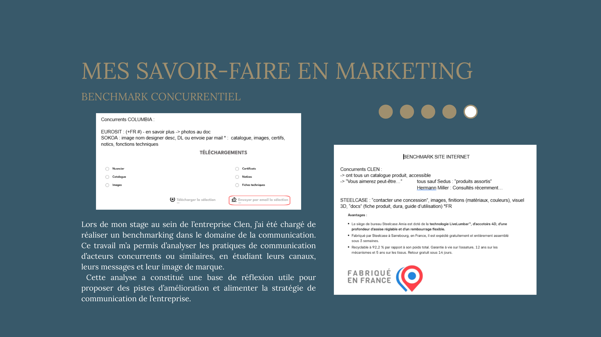
MarketingAnalyse comparative des pratiques de communication d'acteurs du secteur réalisée lors du stage chez Clen.
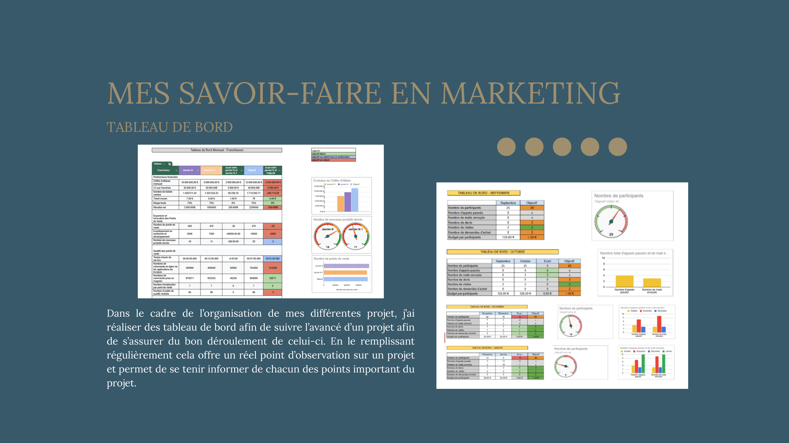
MarketingConception d'outils de suivi pour visualiser l'avancement, les indicateurs clés et le bon déroulement des actions.
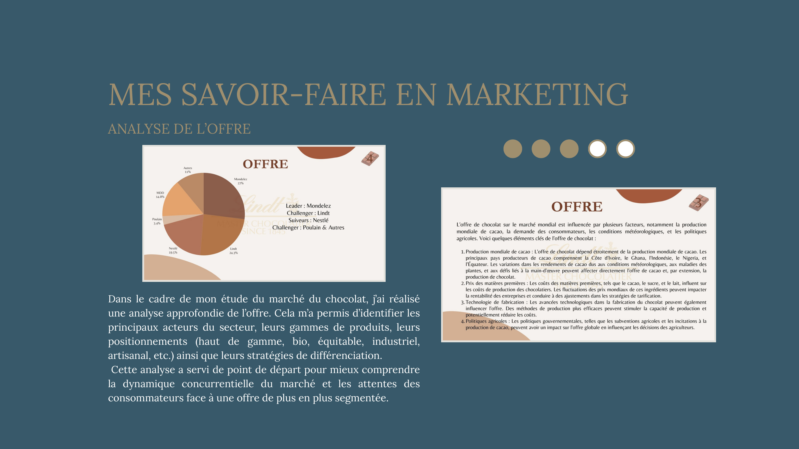
MarketingIdentification des principaux acteurs, gammes, positionnements et tendances du marché du chocolat.
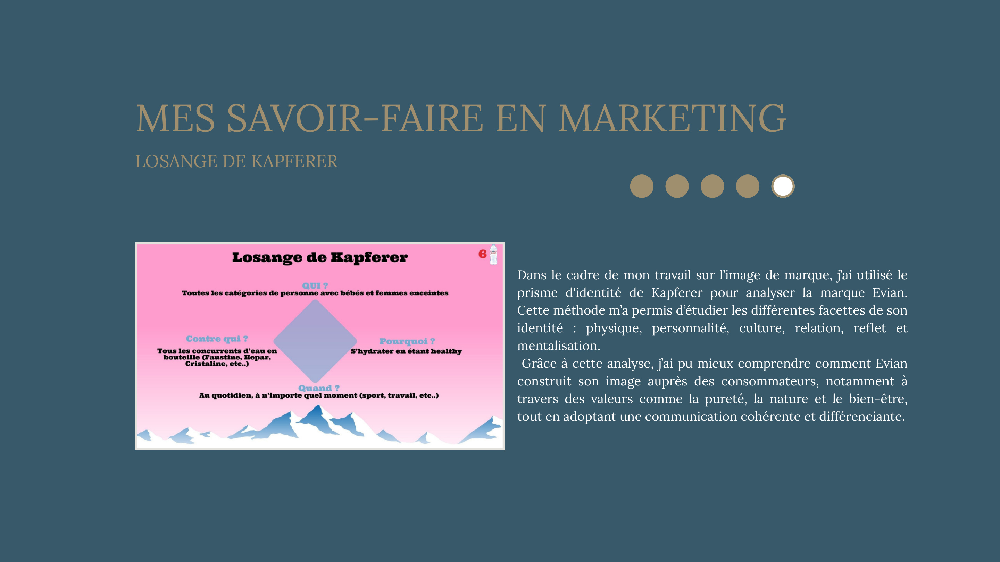
MarketingApplication du prisme d'identité de Kapferer pour analyser l'identité et le positionnement de la marque Evian.
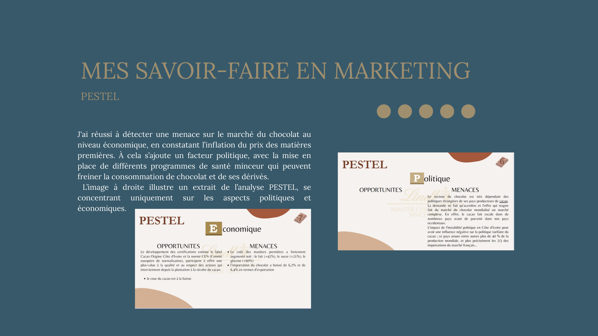
MarketingIdentification des facteurs externes influençant le marché : inflation des matières premières, enjeux politiques et santé.
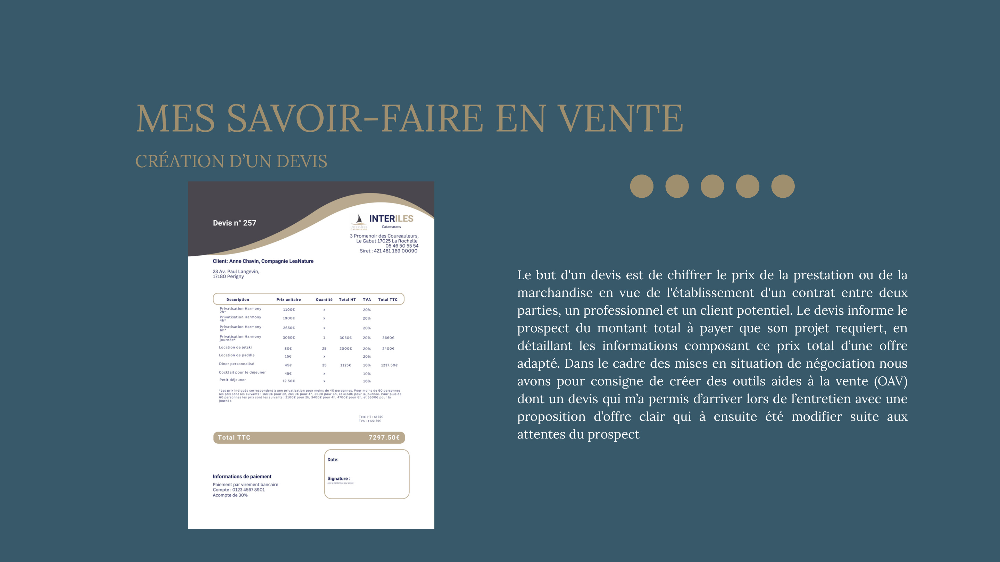
VenteConception d'un devis structuré et adaptable pour aborder un entretien de négociation avec une offre claire et professionnelle.
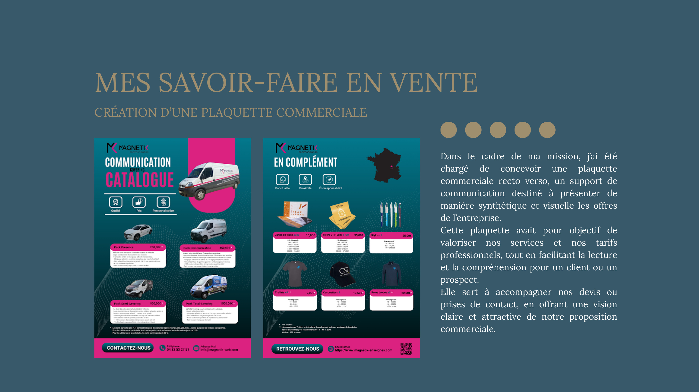
Vente / CommunicationConception d'une plaquette commerciale pour présenter offres, services et tarifs de manière claire et attractive.
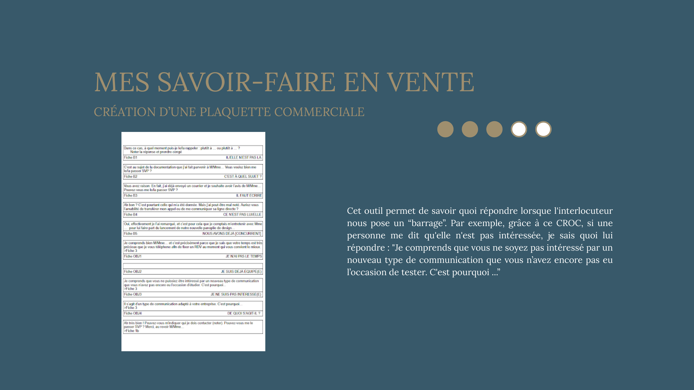
VenteCréation d'un outil CROC pour structurer les réponses aux barrages et objections lors d'une prospection commerciale.
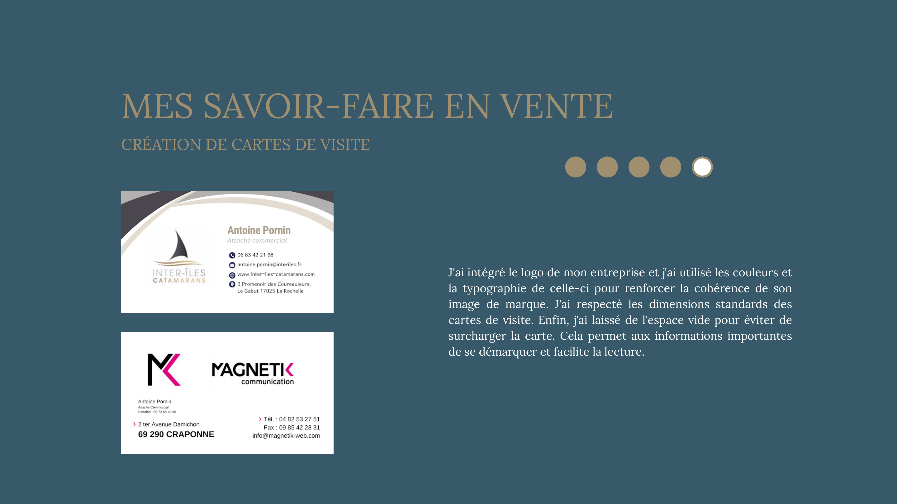
CommunicationConception de cartes de visite respectant l'identité visuelle d'une entreprise : logo, couleurs, typographie et hiérarchie.
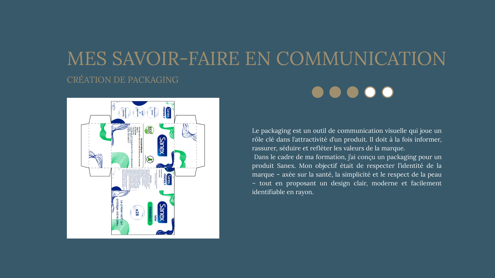
CommunicationConception d'un packaging respectant l'identité de marque Sanex : santé, simplicité, respect de la peau et clarté visuelle.
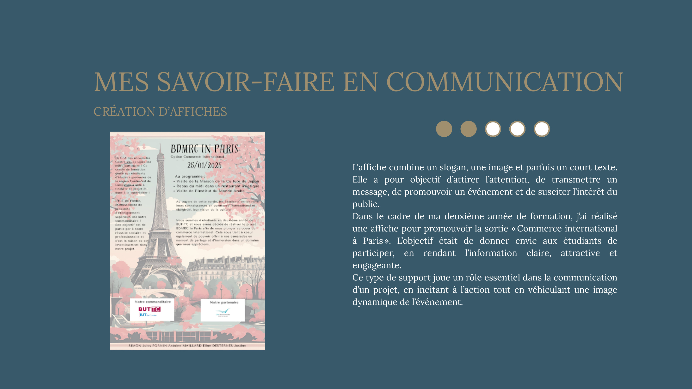
CommunicationCréation d'une affiche pour promouvoir une sortie Commerce International à Paris : information claire et engageante.
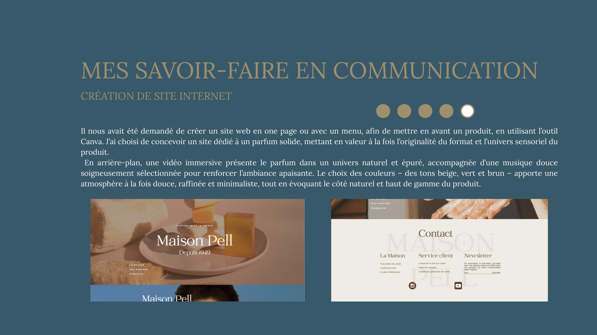
Communication / DigitalConception sur Canva d'un site web one-page immersif pour un parfum solide : univers naturel, premium et sensoriel.
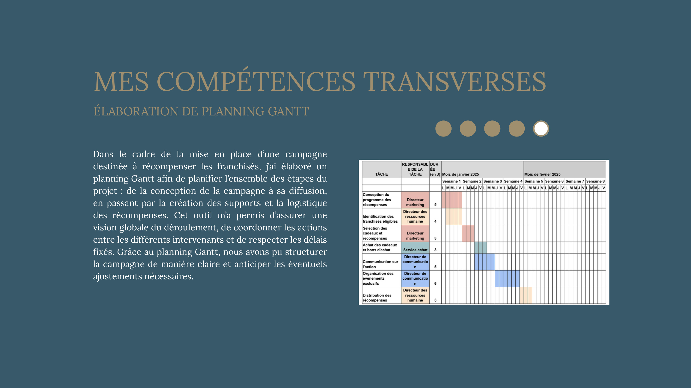
TransverseÉlaboration d'un planning Gantt pour une campagne de récompense franchisés : planification, coordination et suivi.
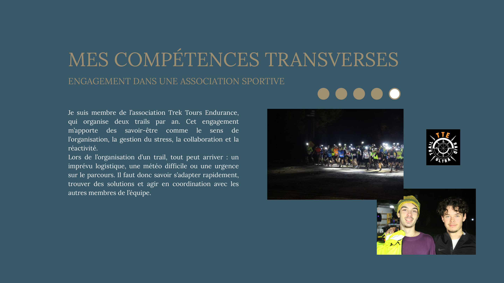
TransverseMembre actif de Trek Tours Endurance : organisation de deux trails annuels, sécurisation du parcours, missions de commissaire.
Co-création d'un concept de parfum solide innovant : étude de marché, business model, prototypage et pitch final devant jury.